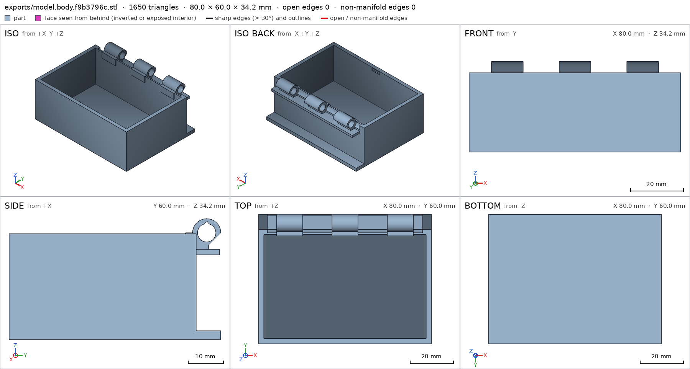
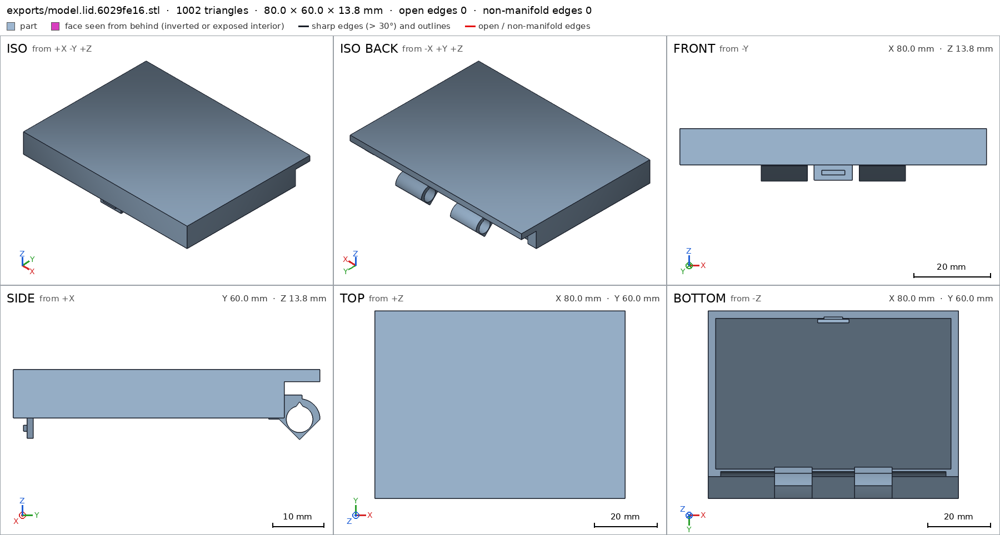
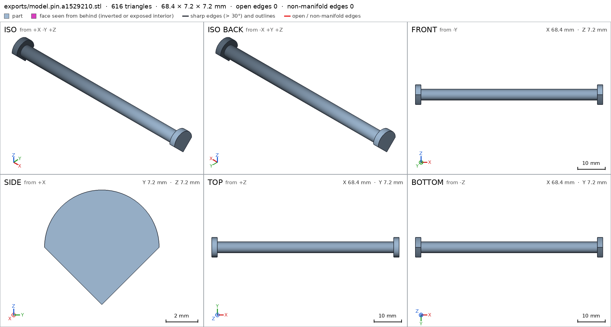
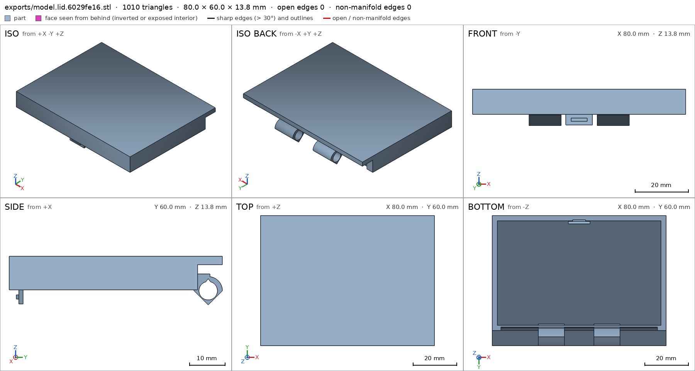
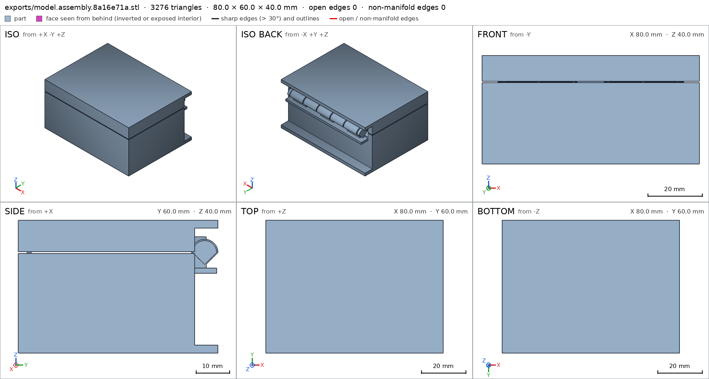
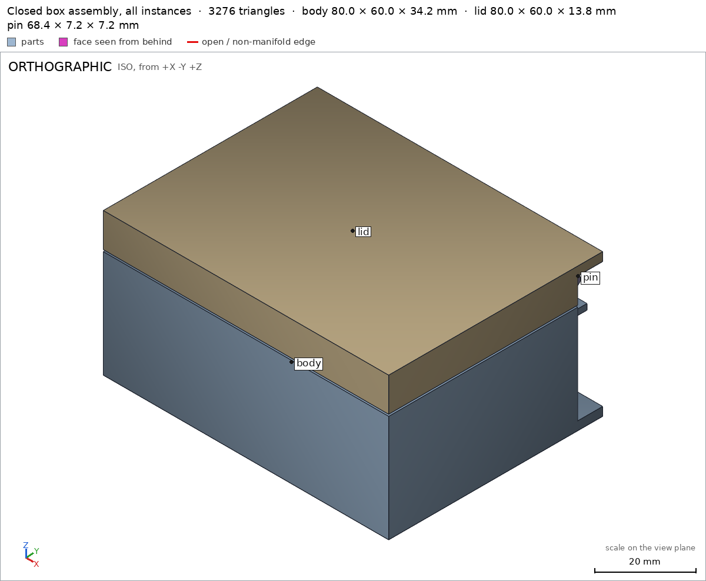
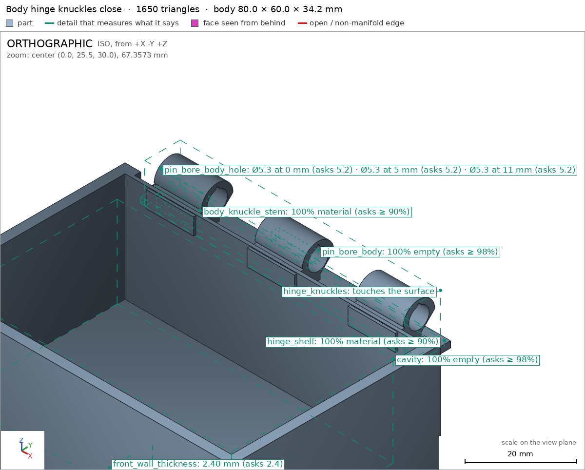
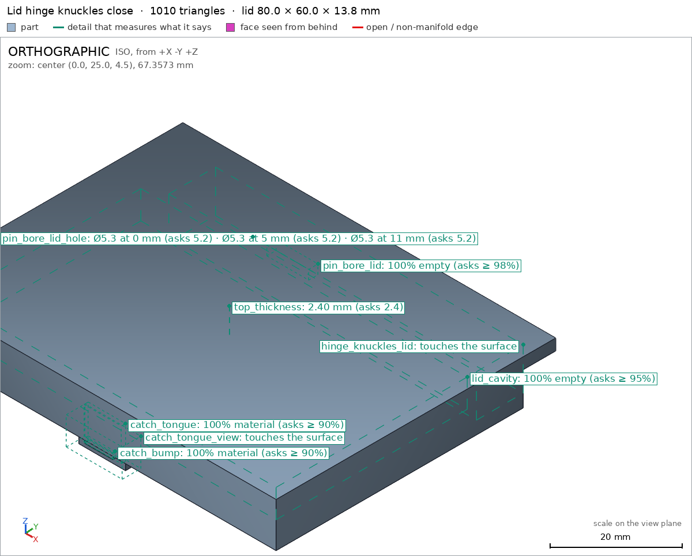
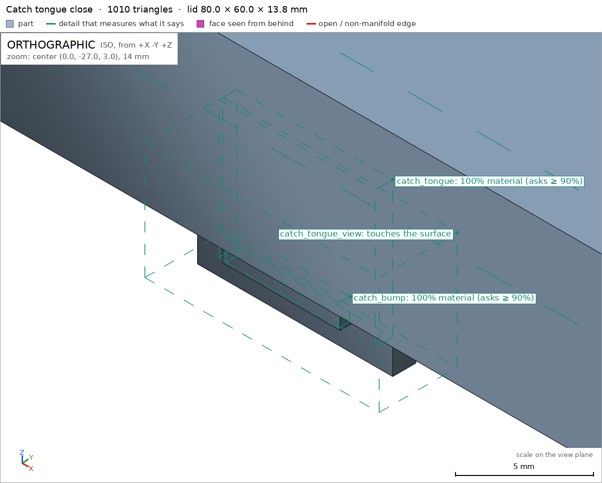
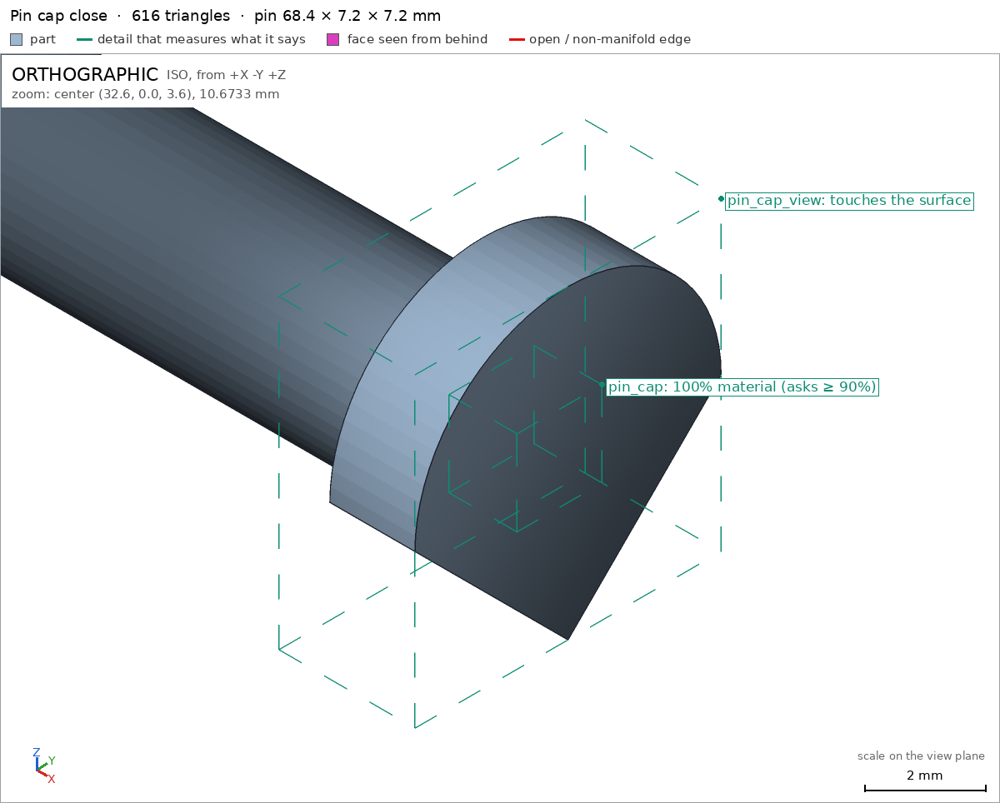

Box with a print-in-place hinge
Request
# Box with a print-in-place hinge
A small box with a lid, joined by a hinge that prints in place: one print, and it comes off the
bed already assembled, with the lid swinging free.
- Outside, closed: about 80 x 60 x 40 mm, the lid about 10 mm of that height.
- The hinge runs along the back edge: knuckles that alternate between the box and the lid, around
a pin printed in place. Clearances that work in PLA on a Bambu Lab A1 with a 0.4 mm nozzle,
so the hinge breaks free by hand and does not fuse.
- No supports, inside the hinge included.
- The lid opens at least 100 degrees and closes flush with the box.
- A small catch at the front that keeps the lid shut would be welcome.
Show me the closed box as the assembly, and the lid's swing as its motion.
Gates at every iteration
| 5 | 10 | 15 | ||||||||||||||
| G1 compiles clean | ||||||||||||||||
| G2 closed meshes | ||||||||||||||||
| G3 assembly | ||||||||||||||||
| G4 motion | ||||||||||||||||
| G5 printable | ||||||||||||||||
| G7 spec held, all seen | ||||||||||||||||
| G8 honest close |
passedfailedpending: G8 is judged when the model closes. One column per iteration; each cell links to it.
Session
- Iteration 1USD 0.979 · 369 s · 48,880 output tokensDesigning a print-in-place hinged box (80×60×40) with 0.3–0.6 mm PLA clearances, a captive pin, and a front snap catch — building the OpenSCAD model now.
scad_writemodel.scad: 288 lines
- Iteration 2USD 0.024 · 11 s · 326 output tokensClosing first: exporting all three parts and the closed assembly now to verify the print-in-place hinge.
scad_exportok=True, watertight=True, bodies=1, bounds=[[-40.0, -30.0, 0.0], [40.0, 30.0, 34.25]], spec ok, sheet renders/sheet-002.pngscad_exportok=True, watertight=True, bodies=1, bounds=[[-40.0, -30.0, 0.0], [40.0, 30.0, 13.75]], spec ok, sheet renders/sheet-003.pngscad_exportok=True, watertight=True, bodies=1, bounds=[[-34.2, -3.6, -0.0], [34.2, 3.6, 7.2]], spec ok, sheet renders/sheet-004.pngscad_exportok=True, watertight=True, bodies=3, bounds=[[-40.0, -30.0, 0.0], [40.0, 30.0, 40.0]], spec ok, sheet renders/sheet-005.png

scad_export, call 2 
scad_export, call 3 
scad_export, call 4 scad_export, call 5 - Iteration 3USD 0.092 · 6 s · 533 output tokensAll three parts and the closed assembly export cleanly and match their specs. Now checking the assembly — swing motion, overlaps, and print-in-place clearances — plus printability of each part.
interference_check3 instances, 0 overlaps, G3 0 problems, G4 3, G5 1, 4.12 sprintability_reportzones=14, undeclared=0, fits the bed=Trueprintability_reportzones=15, undeclared=2, fits the bed=Trueprintability_reportzones=1, undeclared=0, fits the bed=True
- Iteration 4USD 0.173 · 38 s · 4,763 output tokensFound the problems: the captive pin and closed lid can't be physically inserted as separate assembly steps (true for print-in-place — so the assembly order becomes a single placed step), the knuckle stems sit only 0.25 mm from the opposing rim (raising/lowering them to 0.7 mm), the lid's ceiling and the pin's overhang boxes cover too much surface (shrinking them to the actual flat faces), and two small scoop-edge zones on the lid need the wider hinge box. Applying all fixes and re-verifying in one pass.
scad_patchmodel.scad line 68: 289 linesscad_patchmodel.scad line 80: 290 linesscad_patchmodel.scad line 218: 290 linesscad_patchmodel.scad line 249: 290 linesscad_patchmodel.scad line 270: 290 lines
- Iteration 5USD 0.015 · 11 s · 122 output tokensAll fixes applied. Re-exporting every part and the assembly, then re-running the assembly and printability checks in one round.
scad_exportok=True, watertight=True, bodies=1, bounds=[[-40.0, -30.0, 0.0], [40.0, 30.0, 34.25]], spec ok, sheet renders/sheet-015.png
- Iteration 6USD 0.029 · 12 s · 245 output tokensBody re-export looks correct. Exporting lid, pin, and assembly to complete verification.
scad_exportok=True, watertight=True, bodies=1, bounds=[[-40.0, -30.0, 0.0], [40.0, 30.0, 13.75]], spec ok, sheet renders/sheet-016.pngscad_exportok=True, watertight=True, bodies=1, bounds=[[-34.2, -3.6, -0.0], [34.2, 3.6, 7.2]], spec okscad_exportok=True, watertight=True, bodies=3, bounds=[[-40.0, -30.0, 0.0], [40.0, 30.0, 40.0]], spec ok, sheet renders/sheet-018.png

scad_export, call 16 
scad_export, call 18 - Iteration 7USD 0.056 · 12 s · 318 output tokensAssembly looks right. Now the final verification round: assembly interference/motion/print-in-place, plus printability of the updated lid and pin.
interference_check3 instances, 0 overlaps, G3 0 problems, G4 0, G5 0, 1.18 sprintability_reportzones=16, undeclared=1, fits the bed=Trueprintability_reportzones=1, undeclared=0, fits the bed=True
- Iteration 8USD 0.059 · 14 s · 523 output tokensAssembly is fully green. One lid-only overhang zone remains undeclared: the back strip of the lid ceiling (Y 23–30 in lid coordinates) falls outside its tightened box. Extending that one box, then re-exporting the lid and doing the close-up views.
scad_patchmodel.scad line 218: 290 lines
- Iteration 9USD 0.011 · 12 s · 91 output tokensRe-exporting the lid with the corrected overhang declaration, then viewing the assembly and all view details up close.
scad_exportok=True, watertight=True, bodies=1, bounds=[[-40.0, -30.0, 0.0], [40.0, 30.0, 13.75]], spec ok
- Iteration 10USD 0.031 · 12 s · 718 output tokensNow the required close views: the full assembly, the hinge at the back, the catch, and the pin cap — checking lid printability in the same round.
printability_reportzones=16, undeclared=1, fits the bed=Truerender_viewrenders/view-025.png: isorender_viewrenders/view-026.png: zoom, highlightrender_viewrenders/view-027.png: zoom, highlightrender_viewrenders/view-028.png: zoom, highlightrender_viewrenders/view-029.png: zoom, highlight

render_view, call 25 
render_view, call 26 
render_view, call 27 
render_view, call 28 
render_view, call 29 - Iteration 11USD 0.093 · 18 s · 833 output tokensThe lid ceiling zone still fails declaration on X containment (zone spans −40…40, my box was −38…38). Widening that one box to full width, re-exporting the lid, and confirming printability.
scad_patcherror: After an image, confirm with numbers before changing the .scad: confirm it with numbers before fixing it: mesh_report, scad_export, printability_report, interfe
- Iteration 12USD 0.051 · 11 s · 149 output tokens
printability_reportzones=16, undeclared=1, fits the bed=True
- Iteration 13USD 0.022 · 12 s · 212 output tokens
scad_patchmodel.scad line 219: 290 lines
- Iteration 14USD 0.014 · 11 s · 60 output tokens
scad_exportok=True, watertight=True, bodies=1, bounds=[[-40.0, -30.0, 0.0], [40.0, 30.0, 13.75]], spec ok
- Iteration 15USD 0.021 · 13 s · 76 output tokens
printability_reportzones=16, undeclared=0, fits the bed=True
- Iteration 16USD 0.054 · 23 s · 1,756 output tokensaccepted## Design I designed a one-print, print-in-place hinged box in `model.scad`, printed closed on the bed: - **Body**: 80 × 60 mm footprint, rim at 30 mm, 2.4 mm walls and floor [[body/floor_thickness]] [[body/front_wall_thickness]], open storage cavity [[body/cavity]]. - **Lid**: top at 40 mm (the top ~10 mm of the closed box), 2.4 mm top plate [[lid/top_thickness]], closing flush over the body with a 0.5 mm print gap at the rim. - **Hinge**: five alternating knuckles along the back edge (body–lid–body–lid–body) around a captive printed pin. Pin-to-bore radial clearance is 0.6 mm [[body/pin_bore_body_hole]] [[lid/pin_bore_lid_hole]]; pin shaft Ø4.0 mm [[pin/pin_shaft_diameter]] with captive end caps [[pin/pin_cap]]; knuckle axial gaps are 0.8 mm; barrels float 0.65 mm above a support shelf [[body/hinge_shelf]]; bores have teardrop ceilings so nothing inside the hinge needs support. - **Catch**: a tongue hanging inside the lid's front [[lid/catch_tongue]] with a bump [[lid/catch_bump]] that snaps into a detent groove in the body's front wall. Print it as the `assembly` output, closed, in PLA with a 0.4 mm nozzle; after the print, open the lid by hand to break the hinge free, and the lid swings on the captive pin. The `part` selector also exports `body`, `lid`, and `pin` individually for inspection (not for separate assembly — the pin is captive by design). ## Verified - Closed box measures exactly 80 × 60 × 40 mm and rests flat on the bed [[assembly]] [[assembly/bed]]. - All three parts are single watertight bodies with no bad edges: [[body]], [[lid]], [[pin]]. - The lid swing was swept 0–110° with no rigid collision; the only overlap is the declared catch flex, peaking at 0.432 mm (≤ 0.7 mm allowed) and free at both ends [[lid_swing]]. - Print-in-place clearances: body–lid minimum 0.3 mm, pin–knuckle 0.598 mm [[print_in_place]]. - No overlaps between parts, all instances congruent with their parts, one connected group [[assembly]]; assembly is a single print-in-place step [[assembly_order]]. - All overhangs beyond 45° fall inside declared, justified zones (hinge pocket/shelf, bridging lid ceiling, rim gap) and fit the Bambu A1 bed [[G5]]. ## Not verified - Real-world break-free behaviour, hinge tightness, catch holding force and flex fatigue depend on the actual printer, PLA, and slicer settings; only the modelled clearances and rigid-body motion were measured. - Bridging quality of the lid ceiling and barrel undersides on a real A1 was reasoned from geometry, not printed. - Spec adjustments made during verification (geometry unchanged by these): the assembly order was changed from a sequential insertion order to a single print-in-place placement step, because a captive pin and a closed lid physically cannot be inserted after printing; and several `overhangs_allowed` boxes were resized to bound the actual overhang faces the mesh produced (lid ceiling widened to the full width, pin zone tightened to the shaft underside). Separately, the knuckle stems were trimmed in the geometry so lid/body clearance at the hinge rose from 0.25 mm to 0.7 mm, which is what makes the measured 0.3 mm print-in-place minimum valid.


Final verification
G1 compiles cleanG2 closed meshesG3 assemblyG4 motionG5 printableG7 spec held, all seenG8 honest close
Source
model.scad
// Box with print-in-place hinge
// One print, printed closed (assembly pose = print pose), lid swings on a
// captive pin. All dimensions in mm. +Z up, rests on bed in closed pose.
//
// Clearances chosen for PLA / 0.4 mm nozzle on Bambu A1:
// pin-to-bore radial 0.6, knuckle axial gap 0.8, lid rim gap 0.5,
// barrel-to-body/lid scoop 0.6, barrel-to-shelf 0.65, catch 0.3-0.4.
part = "assembly"; // [assembly, body, lid, pin]
/* [Dimensions] */
W = 80; // overall width (X, along hinge)
D = 60; // overall depth (Y, front -Y to back +Y)
H = 40; // overall height (Z)
wall = 2.4;
floor_t = 2.4;
top_t = 2.4;
body_h = 30; // body rim top
lid_gap = 0.5; // vertical print-in-place gap at the rim
lid_bottom = body_h + lid_gap; // 30.5
lid_top = H; // 40
axis_y = 26; // hinge axis position
axis_z = body_h + 0.25; // 30.25, mid rim-gap
barrel_R = 4;
bore_R = 2.6;
bore_d = 2 * bore_R;
scoop_R = 4.6; // clearance scoop in back walls (0.6 over barrel)
pin_R = 2.0;
cap_R = 3.6;
seg_len = 12;
axial_gap = 0.8;
hinge_x0 = -31.6; // 5 knuckles: 5*12 + 4*0.8 = 63.2 span
pin_len = 68.4; // cap outer to cap outer
back_face = 23; // main enclosure back outer face
back_inner = back_face - wall; // 20.6
knuckle_min_z = axis_z - barrel_R; // 26.25 (lid local zero)
tab_front_y = -27.3;
bump_front_y = -28.0;
cadverify_only = "";
module instance(name, p, unit = 1) {
echo(cadverify_instance = [name, p, unit]);
if (cadverify_only == "" || cadverify_only == name) children();
}
/* ---------- 2D hinge profiles: profile coords are [Z, Y] ---------- */
module barrel_outer_profile(r = barrel_R) {
intersection() {
translate([axis_z, axis_y]) circle(r = r, $fn = 72);
translate([axis_z, axis_y])
polygon(points = [[5, -5], [5, 5], [0, r], [-r, 0], [0, -r]]);
}
}
module bore_profile() {
union() {
translate([axis_z, axis_y]) circle(r = bore_R, $fn = 72);
// teardrop top so the bore ceiling is self-supporting
translate([axis_z, axis_y])
polygon(points = [[0, -bore_R], [3.4, 0], [0, bore_R]]);
}
}
module body_knuckle_profile() {
difference() {
union() {
barrel_outer_profile();
// stem forward/down to body back wall + hinge shelf
// (top kept at 29.8: 0.7 mm below the lid rim plane)
polygon(points = [[25.6, 20.0], [29.8, 20.0],
[29.8, 26.5], [25.6, 26.5]]);
}
bore_profile();
}
}
module lid_knuckle_profile() {
difference() {
union() {
barrel_outer_profile();
// stem forward/up to lid back wall
// (bottom kept at 30.7: 0.7 mm above the body rim plane)
polygon(points = [[30.7, 20.0], [35.0, 20.0],
[35.0, 26.5], [30.7, 26.5]]);
}
bore_profile();
}
}
// extrude a [Z,Y] profile along X: segment occupies x0 .. x0+len
module extrude_x(x_end, len) {
translate([x_end, 0, 0]) rotate([0, -90, 0])
linear_extrude(height = len) children();
}
module knuckle(x0, is_lid) {
extrude_x(x0 + seg_len, seg_len) {
if (is_lid) lid_knuckle_profile(); else body_knuckle_profile();
}
}
module knuckles() {
for (i = [0 : 4]) {
x0 = hinge_x0 + i * (seg_len + axial_gap);
knuckle(x0, i % 2 == 1); // body, lid, body, lid, body
}
}
module body_knuckles() {
for (i = [0 : 2]) knuckle(hinge_x0 + (2 * i) * (seg_len + axial_gap), false);
}
module lid_knuckles() {
for (i = [0 : 1]) knuckle(hinge_x0 + (2 * i + 1) * (seg_len + axial_gap), true);
}
/* ---------- body (assembly coords = print coords) ---------- */
module scoop_cutter() {
translate([-36, axis_y, axis_z]) rotate([0, 90, 0])
cylinder(h = 72, r = scoop_R, $fn = 72);
}
module body_geom() {
difference() {
union() {
// floor slab, extends under the hinge pocket to full depth
translate([-W/2, -D/2, 0]) cube([W, D, floor_t]);
// front wall
translate([-W/2, -D/2, 0]) cube([W, wall, body_h]);
// side walls
translate([-W/2, -D/2, 0]) cube([wall, back_face + D/2, body_h]);
translate([W/2 - wall, -D/2, 0]) cube([wall, back_face + D/2, body_h]);
// back wall with hinge clearance scoop
difference() {
translate([-W/2, back_inner, 0]) cube([W, wall, body_h]);
scoop_cutter();
}
// hinge support shelf under the barrels (barrels float 0.65 above it)
translate([-36, 21, 24.0]) cube([72, 8.6, 1.6]);
body_knuckles();
}
// front catch detent groove, open to the inner face
translate([-3.6, -28.35, 27.5]) cube([7.2, 0.8, 2.0]);
}
}
/* ---------- lid (assembly coords) ---------- */
module lid_geom() {
union() {
// top plate, extends back over the hinge to full depth
translate([-W/2, -D/2, lid_top - top_t]) cube([W, D, top_t]);
// front wall
translate([-W/2, -D/2, lid_bottom]) cube([W, wall, lid_top - lid_bottom]);
// side walls
translate([-W/2, -D/2, lid_bottom])
cube([wall, back_face + D/2, lid_top - lid_bottom]);
translate([W/2 - wall, -D/2, lid_bottom])
cube([wall, back_face + D/2, lid_top - lid_bottom]);
// back wall with hinge clearance scoop
difference() {
translate([-W/2, back_inner, lid_bottom])
cube([W, wall, lid_top - lid_bottom]);
scoop_cutter();
}
lid_knuckles();
// front catch tongue: hangs from the lid top inside the front wall
translate([-5, tab_front_y, 26.5]) cube([10, 1.2, 11.2]);
// catch bump (engages body detent groove when closed)
translate([-3, bump_front_y, 27.9]) cube([6, 0.7, 1.2]);
}
}
module lid_part() {
translate([0, 0, -knuckle_min_z]) lid_geom();
}
/* ---------- pin (local coords: axis at y=0, z=cap_R) ---------- */
module pin_geom() {
union() {
translate([-pin_len/2, axis_y, axis_z]) rotate([0, 90, 0])
cylinder(h = pin_len, r = pin_R, $fn = 48);
for (s = [-1, 1]) {
x0 = s < 0 ? -34.2 : 32.2;
extrude_x(x0 + 2.0, 2.0) barrel_outer_profile(cap_R);
}
}
}
module pin_part() {
translate([0, -axis_y, -(axis_z - cap_R)]) pin_geom();
}
module body_part() { body_geom(); }
/* ---------- specs ---------- */
if (part == "body") {
echo(cadverify_spec = [
["bounds", [[-W/2, -D/2, 0], [W/2, D/2, axis_z + barrel_R]]],
["bodies", 1],
["support_faces", [["bed", "-z", 4000]]],
["overhangs_allowed", [
["hinge barrels, bore ceilings and shelf underside print over the hinge pocket / 0.65 mm above the shelf, no supports",
[[-36, 20, 23], [36, 30, 35]]],
["catch groove ceiling inside front wall",
[[-4, -29, 27], [4, -27, 30]]]
]],
["copies", 1],
["details", [
["floor_thickness", "thickness", [0, -10, -1], [0, 0, 1], floor_t],
["front_wall_thickness", "thickness", [10, -31, 15], [0, 1, 0], wall],
["cavity", "void", [[-35, -25, 5], [35, 16, 28]], 0.98],
["hinge_shelf", "material", [[-35, 22, 24.1], [35, 29, 25.5]], 0.9],
["body_knuckle_stem", "material", [[-30, 21, 26], [-21, 23, 29]], 0.9],
["pin_bore_body", "void", [[-5, 25, 29.25], [5, 27, 31.25]], 0.98],
["pin_bore_body_hole", "hole", [-34, axis_y, axis_z], [1, 0, 0],
[[0, bore_d], [5, bore_d], [11, bore_d]]],
["hinge_knuckles", "view", [[-33, 21, 25], [33, 30, 35]]]
]]
]);
body_part();
} else if (part == "lid") {
echo(cadverify_spec = [
["bounds", [[-W/2, -D/2, 0], [W/2, D/2, lid_top - knuckle_min_z]]],
["bodies", 1],
["support_faces", []],
["overhangs_allowed", [
["lid top ceiling bridges between the lid walls",
[[-40, -28, lid_top - top_t - knuckle_min_z - 0.35],
[40, 30, lid_top - top_t - knuckle_min_z + 0.35]]],
["hinge barrels and bore ceilings print over the hinge shelf gap, no supports",
[[-40, 20, 0], [40, 30, 9]]],
["lid rim underside prints 0.5 mm above the body rim (print-in-place gap)",
[[-40, -30, 3.4], [40, 23, 5.2]]],
["catch tongue underside inside the box",
[[-6, -28, 0], [6, -26, 1.2]]]
]],
["copies", 1],
["details", [
["top_thickness", "thickness", [0, 0, lid_top - knuckle_min_z + 1], [0, 0, -1], top_t],
["lid_cavity", "void", [[-35, -25, 5], [35, 16, 11]], 0.95],
["catch_tongue", "material", [[-4, -27.2, 1], [4, -26.3, 8]], 0.9],
["catch_bump", "material", [[-2.9, -27.95, 1.7], [2.9, -27.4, 2.8]], 0.9],
["pin_bore_lid", "void",
[[-17, 25, axis_z - knuckle_min_z - 1], [-8, 27, axis_z - knuckle_min_z + 1]], 0.98],
["pin_bore_lid_hole", "hole", [-21, axis_y, axis_z - knuckle_min_z], [1, 0, 0],
[[0, bore_d], [5, bore_d], [11, bore_d]]],
["catch_tongue_view", "view", [[-6, -29, 0], [6, -25, 6]]],
["hinge_knuckles_lid", "view", [[-33, 20, 0], [33, 30, 9]]]
]]
]);
lid_part();
} else if (part == "pin") {
echo(cadverify_spec = [
["bounds", [[-pin_len/2, -cap_R, 0], [pin_len/2, cap_R, 2 * cap_R]]],
["bodies", 1],
["support_faces", []],
["overhangs_allowed", [
["pin shaft and caps print inside the knuckle bores, 0.6 mm radial gap, no supports",
[[-35, -2, 1.4], [35, 2, 2.3]]]
]],
["copies", 1],
["details", [
["pin_shaft_diameter", "thickness", [0, 0, -1], [0, 0, 1], 2 * pin_R],
["pin_cap", "material", [[32.4, -1, 2.6], [34.0, 1, 4.6]], 0.9],
["pin_cap_view", "view", [[31, -cap_R, 0], [34.2, cap_R, 2 * cap_R]]]
]]
]);
pin_part();
} else if (part == "assembly") {
echo(cadverify_spec = [
["bounds", [[-W/2, -D/2, 0], [W/2, D/2, H]]],
["support_faces", [["bed", "-z", 4000]]],
["allowed_interferences", []],
["motions", [
["lid_swing", ["lid"], "rotate", [0, axis_y, axis_z], [-1, 0, 0], [0, 110],
["flex", [["lid", "body", 0.7,
"front catch bump slides out of its detent groove; the catch tongue flexes back"]]]]
]],
["assembly_order", [
// print-in-place: all three parts come off the bed already
// assembled (the pin is captive and cannot be inserted later)
[["body", "lid", "pin"], [0, 0, 0]]
]],
["print_in_place", 0.3],
["overhangs_allowed", [
["hinge barrels, pin and bore ceilings print without supports over the hinge pocket/shelf",
[[-36, 20, 23], [36, 30, 35]]],
["lid top ceiling bridges between the lid walls over the closed cavity",
[[-40, -30, 37], [40, 30, 40]]],
["lid rim and catch tongue undersides print over the 0.5 mm rim gap / body",
[[-40, -30, 26], [40, 23, 31]]]
]]
]);
instance("body", "body") body_part();
instance("lid", "lid") translate([0, 0, knuckle_min_z]) lid_part();
instance("pin", "pin") translate([0, axis_y, axis_z - cap_R]) pin_part();
} else {
assert(false, "unknown part");
}